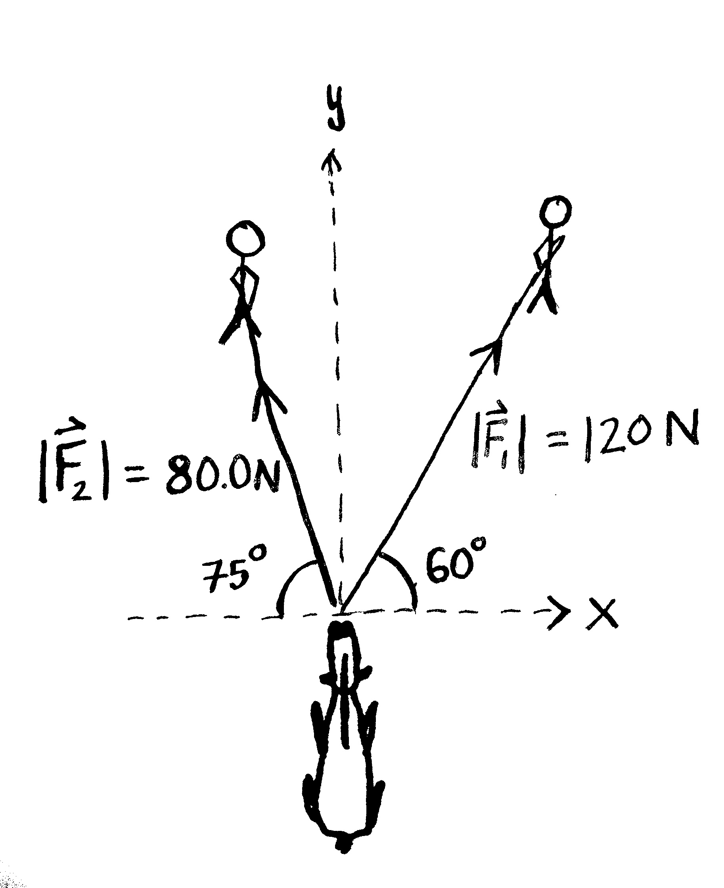
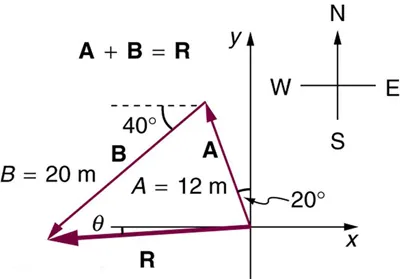

Phy111 Homework 1A
Unit Conversions
Problem 1.A.1
A car is traveling at a speed of \(\text{33\ m/s}\).
- What is the car’s speed in kilometers per hour? [118.8km/hr]
- The speed limit is 55mi/hr. How many mi/hr over the speed limit is the car traveling? [18.8mi/hr]
Problem 1.A.2
Soccer fields vary in size. A large soccer field is 115 m long and 85 m wide.
- What are its dimensions in feet and inches? [377’ 3.5“ by 278’ 10.5”]
- What is the area of the field in square meters?[\(9775~`m^2\)]
- What is the area of the field in square feet?[105200~ft2]
Problem 1.A.3
Tectonic plates are large segments of the Earth’s crust that move slowly. Suppose that one such plate has an average speed of 4.0 cm/year.
- What distance does it move in 1 s at this speed? [\(1.3 \times 10^{-9}~m\)]
- What is its speed in kilometers per million years? [\(40~km/Myr\)]
Algebra
Problem 1.A.4
Solve for the unknown in each of these equations:
\[3x - 4 = 7\] \[\frac{3y}{4} = \frac{7}{6y}\]
Problem 1.A.5
Solve for the roots of this quadratic equation:
\[12 - 3t = 7t^2\]
Problem 1.A.6
Solve for both unknowns in the following systems of equations: \[2x - 5y = -3 \qquad\qquad 5x + y = 1\] \[-5.4 = v - 9.8 t \qquad\qquad 4.9 t^2 = v * t + 0.6\]
answers: x=3.67,y=+-1.247, t=1.112 and t=-1.541, x=0.0741 and y=0.630,
Trigonometry
Problem 1.A.7
The angle of elevation to the top of a building in Baltimore is found to be 4 degrees from the ground at a distance of 1 mile from the base of the building. Find the height of the building in meters. [\(112.5~m\)]
Problem 1.A.8
A right triangle has one side of length 2.4m and a perpendicular side of length 1.5m.
- What is the hypotenuse length of the triangle? [\(2.83~m\)]
- What is the angle opposite the 2.4m side? [\(58^\circ\)]
- What is the angle opposite the 1.5m side? [\(32^\circ\)]
Vectors
Problem 1.A.9:
The helicopter view of the figure below shows two people pulling on a stubborn mule. Find:
- the single force that is equivalent to the two forces shown. (\(|\vec{F_2}|=80.0~N\) and \(|\vec{F_1}|=120~N\)) [\(\vec{R}\) = (39.3 N,181 N)]
- the force a third person would have to exert on the mule to make the net force equal to zero. The forces are measured in units of Newtons (\(N\)).

Problem 1.A.10
Vector A has cartesian components \(\vec{A} = (3,5)\) and vector B has cartesian components \(\vec{B} = (1,4)\). Draw a picture and calculate the polar form (moving counterclockwise from the x-axis at \(0^\circ\)) of each expression:
- \vec{A} [\(5.83\) at \(59^\circ\)]
- -\vec{B} [\(4.12\) at \(256^\circ\)]
- \vec{A} + \vec{B} [\(9.85\) at \(66^\circ\)]
- \vec{A} - \vec{B} [\(2.24\) at \(26^\circ\)]
- \vec{B} - \vec{A} [\(2.24\) at \(206^\circ\)]
- 2\vec{A} + \vec{B} [\(15.65\) at \(63^\circ\)]
Problem 1.A.11
Suppose you first walk 12.0 m in a direction \(\text{20º}\) west of north and then 20.0 m in a direction \(\text{40.0º}\) south of west. How far are you from your starting point? [\(19.5~m\)] What is the compass direction of a line connecting your starting point to your final position? [\(4.7^\circ\) South of West]

Problem 1.A.12
In an attempt to escape his island, Gilligan builds a raft and sets to sea. The wind shifts a great deal during the day, and he is blown along the following straight lines: \(2\text{.}\text{50\ km}\) \(45.0º\) north of west; then \(4\text{.}\text{70\ km}\) \(60.0º\) south of east; then \(1.30\ \text{km}\) \(25.0º\) south of west; then \(5\text{.}\text{10\ km}\) straight east; then \(1.70\ \text{km}\) \(5.00º\) east of north; then \(7\text{.}\text{20\ km}\) \(55.0º\) south of west; and finally \(2\text{.}\text{80\ km}\) \(10.0º\) north of east. What is his final position relative to the island? [ \((3.28,-6.57)~km\)]